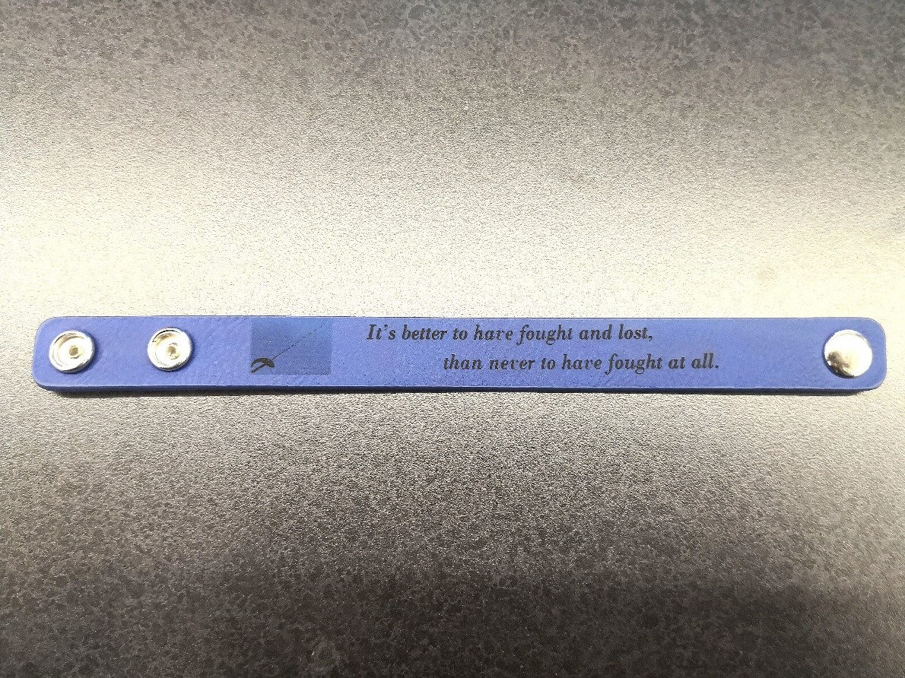

These 3D printers in WIC are the MakerBot Replicator 5th Gen printers which uses a technique called Fused Deposition Modeling(FDM) to print models. Makerbot Replicators basically print models out by heating plastic filamment to certain temperature which can liquify the plastic. These liquified plastic would then become cool and solidify into the shape as it is extruded. Makerbot printers are different from another printer:Formlabs printer---this printer uses ultraviolet radiation to harden resin in order to print different models. Formlabs printer can print things that are more durable compared to the models that printed by Makerbot. However, resin used in Formlabs is far more expensive than the plastic filamment and the price of resin limits our ability to use it.
In class today, we need to scan our head and use Meshmixer to combine our heads on somethings or someones. I download a file from a website called "Thinkiverse". You can search this website and find almost every files you want for your 3D models. My file is a small fairy, because I decided to put my head on a fairy! My classmate 3D scanned my head and I imported my head into Meshmixer.

The last thing I needed to do in this rotation is to use laser cutter to do some decoration on the surface of water bottlle. However, laser cutter can only remove the surface color on the water bottle in order to form decoration, so I need to choose black and white images. After finishing the design of decoration in Corel Draw, I needed put some water into water bottle to make sure it would rotate during the laser cutting. Finally, I just brought the water bottle, put it in to laser cutter, changed the setting, then a individualized water bottle was done!